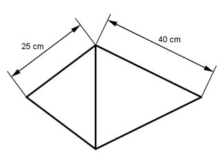
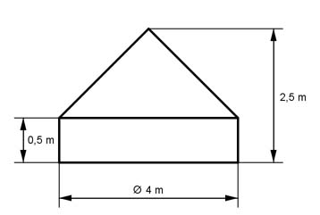
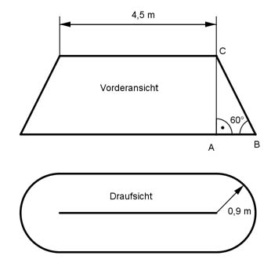

Aufgabe 247
Wie schwer ist der dargestellte Kegel aus Beton
mit einer Dichte von 2,2 g/cm3?
 Er wiegt kg.
Er wiegt kg.
Wie löse ich Matheaufgaben?
Volumen
Aufgabe 217 Zwei Kirchtürme haben als Dach quadratische Pyramiden (Seitenlänge der Grundfläche 9,2 m, Höhe der Pyramide 15,2 m) und sind aus 10 mm dickem Kupferblech (ρ = 8,9 kg/dm3). Wie schwer ist die Bedachung? Es sind t.
Aufgabe 218 Eine quadratische Pyramide als Turmdach wird gedeckt. Wie teuer wird das Dach, wenn eine Seitenfläche der Pyramide 10 m hoch und ihre Grundseite 8 m lang ist und 1 m2 Dach 108 € kostet?
Aufgabe 219 Das dargestellte Werkstück (2 Kegel) besteht aus 2 mm dickem Blech, Dichte 7,85 kg/dm3 und hat an der Nahtstelle einen Umfang von 1,2 m. Wie schwer ist das fertige Teil?  Es wiegt kg.
Aufgabe 220 Über ein Förderband wird Sand zu einem Kegelhaufen aufgeschüttet. Welches Volumen V hat er, wenn er 4 m hoch ist und einen Grundkreisumfang von 38,7 m hat? Welche Bodenfläche A ist bedeckt, wenn der Haufen ein Volumen von 681,9 m3 hat und er 6,5 m hoch ist? Ist der Sand feucht, entsteht ein Verhältnis Radius zu Höhe von 3:2. Welches Volumen V1 hat dann ein 5 m hoher Haufen?
Aufgabe 221 Ein kegelförmiges Senklot aus Blei, Dichte 11,3 g/cm³, ist 8 cm hoch und hat einen Durchmesser von 3 cm. Wie schwer ist es? Es sind g.
Aufgabe 222 Eine der quadratischen ägyptischen Pyramiden besteht aus Steinblöcken und hat eine Grundseite von 210 m und eine Höhe von 136,5 m. Wie groß ist ihr Volumen? Welche Masse hat sie, wenn 1 m3 der Blöcke 2,7 t wiegt? Um wie viel Prozent hat sich ihr Volumen verringert, wenn sie ursprünglich 215 m hoch war und eine Grundseite von 143,5 m hatte?
Aufgabe 223 Aus einem Würfel mit der Seitenlänge a = 8 cm wird der größtmögliche Kegel hergestellt. Wie groß ist der Abfall A? A = cm3
Aufgabe 224 In ein kegelförmiges Glas mit einer Höhe von 10 cm passen 0,2 l. Welchen Durchmesser hat es am Rand? Wie hoch müsste es sein, wenn es einen Randdurchmesser von 4,5 cm hat und 120 ml reinpassen?
Aufgabe 225 Von einer quadratischen Pyramide mit einer Höhe und einer Grundseite von je 5 cm soll der größtmögliche Kegel abgedreht werden. Wie groß ist der Abfall in Prozent? Es sind = %.
Aufgabe 226 Wie viel Stoff braucht man, um ein Zelt in Form einer quadratischen Pyramide mit einer Höhe von 2,8 m und einer Grundseite von 3,6 m zu bauen?
Aufgabe 227 Die quadratische Cheops Pyramide ist 138,75 m hoch und hat eine Grundseite von 230,33 m. Welche Seitenlänge a müsste ein Steinwürfel haben, wenn sie aus 2 500 000 solcher Würfel bestehen würde? a = m
Aufgabe 228 Die quadratische Pyramide vor dem Louvre in Paris ist 21,65 m hoch und hat eine Grundseite von 35,42 m. Wie lang ist eine Stahlstrebe, die die Seitenflächen miteinander verbindet? Wie schwer ist die Glasabdeckung, sie besteht aus 603 Rauten mit Diagonalen von 3 m und 1,9 m und 70 halb so großen Dreiecken, wenn 1 m3 des 21 mm dicken Glases 2,5 t wiegt?
Aufgabe 229 Ein kegelförmiger Messbecher ist 14,5 cm hoch und hat einen Randdurchmesser von 11,5 cm. Wie viel Liter fasst er? Mit wie viel Gramm Zucker mit einer Dichte von 1,6 g/cm³ kann er gefüllt werden? Es sind l.
Aufgabe 230 Ein Kerzenladen bietet 3 unterschiedliche Kerzen in quadratischer Pyramidenform an. Kerze blau 8 x 8 x 33 cm zu 2,49 €, Kerze rot: 10 x 10 x 40 cm zu 4,99 €, Kerze grün 12 x 12 x 50 cm zu 7,49 €. Welches ist der günstigste Preis P bezogen auf das Kerzenvolumen?
Aufgabe 231 Ein kegelförmiges Glas mit einer Höhe von 9,5 cm und einem Randdurchmesser von 7,5 cm wird mit einem Stoff gefüllt, der eine Menge von 80 g für je 100 cm³ braucht. Wie teuer ist eine Füllung, wenn 100 g 2,40 € kosten? €
Aufgabe 232 Ein Silo besteht aus einem Zylinder mit einem Durchmesser von 7,12 m und einer Höhe von 4,64 m sowie einem aufgesetzten Kegeldach mit einer Höhe von 1,89 m. Wie viel Tonnen Getreide können in 3 solcher Silos gelagert werden, wenn 1 m3 Getreide 800 kg wiegt?
Aufgabe 233 Ein Gartenpavillon hat ein aufgesetztes quadratisches Pyramidendach mit einer Grundseite von 3,5 m und einer Höhe von 0,5 m. Wie viel m² Stoff braucht man zur Abdeckung, wenn mit 16% Verschnitt gerechnet wird? Es sind m2. Wie schwer wird es, wenn 1 m2 180 g wiegt?
Aufgabe 234 Ein Kuchen besteht zu 85% aus einem Boden und zu 15% aus einer aufgesetzten kleinen Pyramide. Der Boden hat fertig einen Durchmesser von 26 cm und eine Höhe von 2,5 cm. Wie hoch wird die Pyramide, wenn sie eine Grundfläche von 10 x 10 cm hat?
Aufgabe 235 Wie schwer ist das Zelt, wenn die Plane ein Gewicht von 185 g/m2 hat?  Es sind kg.
Aufgabe 236 Ein kegelförmiges Sektglas ist 120 mm hoch und hat einen Randdurchmesser von 50 mm. Der eingefüllte Sekt steht 6 cm hoch? Zu wie viel Prozent ist es gefüllt?
Aufgabe 237 Ein Werkzeugmacher soll aus einem Kegel mit einem Radius von 10 cm, einer Höhe von 25 cm und einer Dichte von 8,4 g/cm³ die größtmögliche regelmäßige sechseckige Pyramide herstellen. Wie groß ist der Abfall A in kg? . A = kg
Aufgabe 238 Ein Pavillon hat als Dach eine regelmäßige sechseckige Pyramide. Sie hat Seiten von 3,5 m Länge und eine Höhe von 1,9 m. Wie teuer wird die Bedachung aus Kupfer, wenn 1 m2² 105 € kostet?
Aufgabe 239 Für Dekorationssterne werden Pyramiden auf jede Seitenfläche eines Würfels aufgesetzt. Der Würfel hat Seiten von 12 cm, die Pyramiden haben Seitenkanten von jeweils 34 cm. Wie viel Silberfolie braucht man zur Verkleidung? Man braucht cm2
Aufgabe 240 Eine kegelförmige Kohlenhalde ist 23 m hoch und hat einen Böschungswinkel von 45°. Wie groß ist ihr Volumen V?
Aufgabe 241 Wie groß ist die Dachoberfläche in m2?  Es sind m2
Aufgabe 242 Wie schwer ist der größte Kegel, der aus einem 290 g schweren Holzzylinder gedreht wird?
Aufgabe 243 Welches Volumen V hat ein Kegel, der aus einem halbkreisförmigen Blech mit einem Radius von 16 cm gebogen wird? V = cm3
Aufgabe 244 Der Achsenschnitt eines kegelförmigen Messbechers ist ein gleichseitiges Dreieck mit einer Seitenlänge von 10 cm. In welcher Höhe von der Spitze aus muss die Markierung angebracht werden, die eine Füllung von 60 cm3 anzeigt?
Aufgabe 245 Der Abschluss eines Rohres ist eine kegelförmige Haube mit einem Grundkreisdurchmesser von 35 cm und einer Höhe von 12 cm. Wie groß ist der Blechbedarf zu ihrer Herstellung und der Radius des benötigten Kreisausschnitts? M = cm2
Aufgabe 246 Von einem Blech mit einem Durchmesser von 75 cm wird ein Kreisausschnitt mit einem Mittelpunkts- winkel von 60° abgeschnitten und aus dem Rest ein Kegel hergestellt. Wie groß sind dessen Höhe h, sein Grundkreisradius r und sein Volumen V?
Aufgabe 247 Wie schwer ist der dargestellte Kegel aus Beton mit einer Dichte von 2,2 g/cm3?